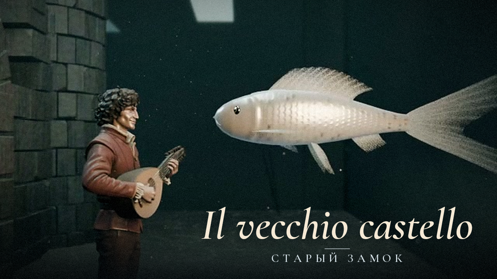
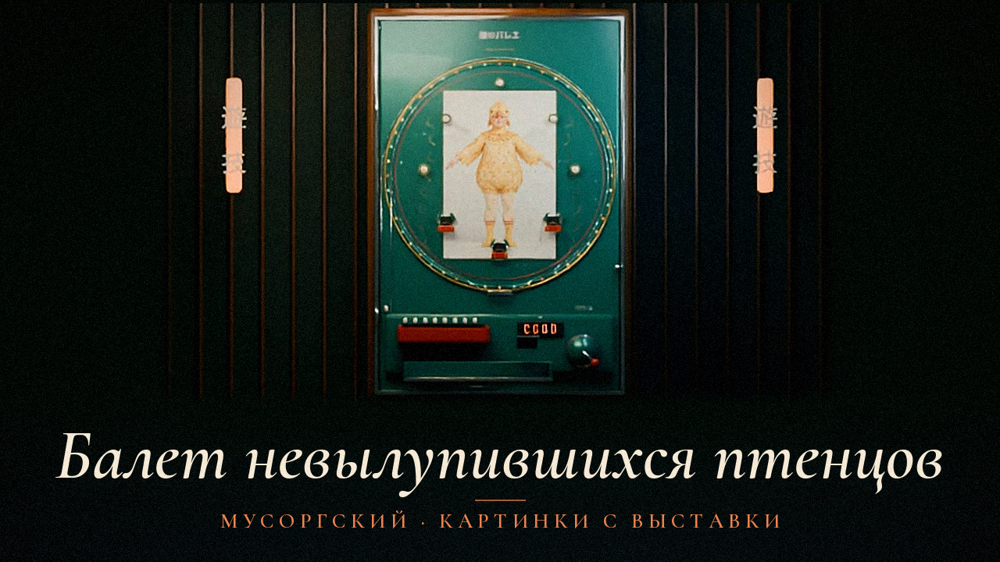

II
Старый замок
Il vecchio castello · 5 мин 08 с
«Средневековый замок, перед которым трубадур поет песню»

Кадр из видео
Музыка → пространство → движение
Анимационные фильмы по мотивам произведения Модеста Мусоргского
По образам Виктора Гартмана
Эпизоды и материалы работы
Il vecchio castello · 5 мин 08 с
«Средневековый замок, перед которым трубадур поет песню»

Кадр из видео
Ballet des poussins dans leurs coques · 1 мин 25 с
«Иные были вставлены в яйца, словно в латы»

Кадр из видео
01 / История цикла
После смерти Виктора Гартмана в 1873 году Владимир Стасов при содействии Петербургского общества архитекторов организовал выставку его работ. Она прошла в Академии художеств в феврале — марте 1874 года. Впечатления от выставки стали поводом для фортепианного цикла Мусоргского; на последней странице рукописи стоит дата 22 июня 1874 года.
По статье Эмилии Фрид «Картинки с выставки». Источник и примечания ↓
Посмертная выставка Гартмана и создание фортепианного цикла.
Первое издание, уже после смерти Мусоргского.
Издание П. Ламма со сверкой нотного текста по автографу.